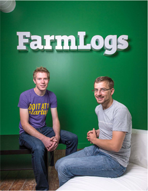

Brad Koch, 2011, B.S., and Jesse Vollmar, 2011, B.S., weren’t typical college students. As incoming freshmen at SVSU, the two were already running a successful IT consulting business. Since their 2011 graduation, both with a Bachelor of Science in computer science, they’ve also “graduated” from their initial business and have started a new company, FarmLogs, which has attracted a lot of investor interest as well as $5million in venture capital.
